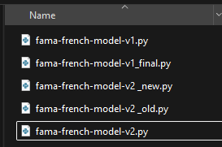
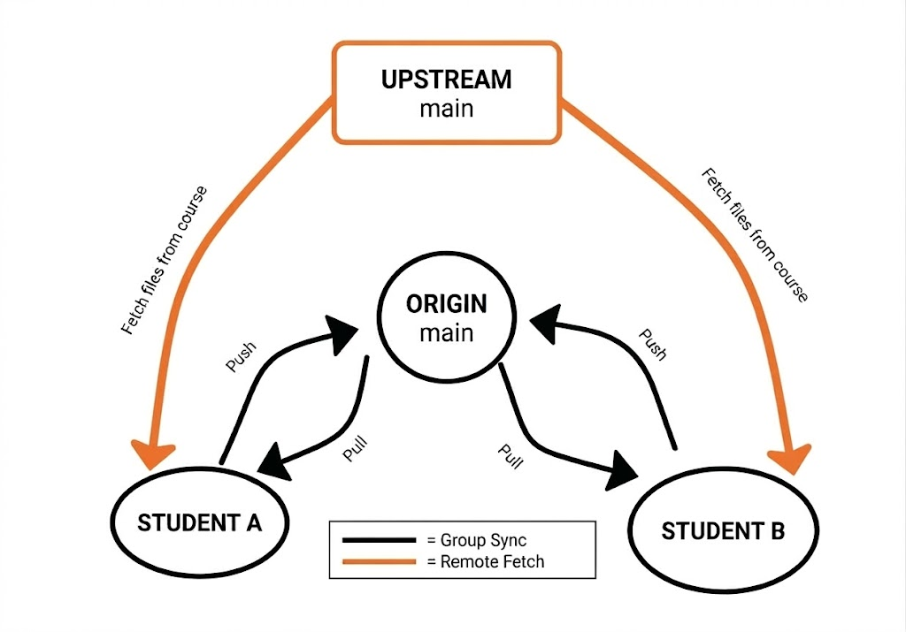
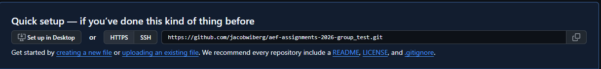
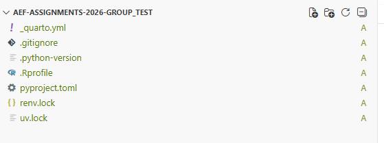

Collaboration with Git and GitHub
This guide covers the essential Git and GitHub commands and workflows you need to collaborate with your group on the mandatory assignments.
Git is a version control system that lets one or more people work on a project simultaneously without overwriting each other’s work. It tracks changes to files and lets you revert to earlier versions if needed. GitHub is a web platform that hosts Git repositories, making it easy to share code and collaborate.
Why use Git and GitHub for collaboration?
Most people have at some point ended up with multiple versions of the same file (see figure 1), making it hard to track the latest version and even harder to collaborate without sending files back and forth.

Git and GitHub are the industry standard for version control and are widely used in finance and data science roles. The goal here is not to make you an expert, but to give you enough to collaborate effectively on your assignments.
Are there any limitations?
Git collaboration works by sharing commits — snapshots of your project at a point in time — to and from a shared repository on GitHub. Unlike Overleaf, there is no live co-editing, so you won’t see each other’s changes in real time. To avoid merge conflicts, I recommend either working in separate Python files (e.g. mean-variance-pfo.py) and pasting code into the Quarto document afterwards, or at minimum working on different sections of the Quarto document at the same time.
Overview of the workflow
Only one person in your group (Student A) needs to follow Parts 1–5. Once Student A has set up the repository and pushed the initial files, the other group members (Student B and C) clone the repository and pull the files.

Part 1 - Creating a GitHub repository for your group.
Go to GitHub.com and click the green “New” button on the left, or navigate to “Repositories” in your profile (top right) and click “New”.
Name your repository (e.g. “AEF-2026-Assignments-Group1”), add a description, and set visibility to “Private”. You do not need to initialize with a README or .gitignore. Click “Create repository”.
Copy the HTTPS URL of the new repository.

- Add collaborators: go to Settings → Collaborators → Add people, and search for your group members by GitHub username or email. Each member must accept the invitation before they can push to the repository.
Part 2 - Making a local copy of the repository through Positron
In Positron, click “New” (top left) and select “New folder from Git”.
Paste the repository URL and click OK. This creates a local copy on your computer. Log in if prompted by the Git Credential Manager.
Open the terminal in Positron. On Windows, the default is PowerShell — you can switch to Git Bash (recommended) or any terminal you prefer.
Part 3 - Connecting to the course repository and grabbing files
- Your repository is currently empty. To access course materials, add an “upstream” connection to the course repository by running:
git remote add upstream https://github.com/advanced-empirical-finance/course-repository.git- Verify it worked by running
git remote -v. Your output should look like this:
origin https://github.com/your-username/AEF-Assignments-Group1.git (fetch)
origin https://github.com/your-username/AEF-Assignments-Group1.git (push)
upstream https://github.com/advanced-empirical-finance/course-repository.git (fetch)
upstream https://github.com/advanced-empirical-finance/course-repository.git (push)- Rather than pulling everything, use
checkoutto grab only the files you need. First fetch the latest state of the course repository:
git fetch upstreamThen grab the environment files:
git checkout upstream/main -- renv.lock uv.lock .Rprofile pyproject.toml _quarto.yml .python-version .gitignoreThe files will appear in Positron’s file explorer. To copy an entire folder, use git checkout upstream/main -- foldername/.
- Grab the assignment files, e.g.:
git checkout upstream/main -- mandatory-assignments/MA_1_portfolio_choice_2026.pdf mandatory-assignments/MA_python_template.qmd(Choose the R template instead if you are working in R.)

Part 4 (Optional) - Organizing the folder structure
- To reorganize into per-assignment folders, you can drag files in Positron’s file explorer or use the terminal:
mkdir "Assignment 1"
mv mandatory-assignments/MA_1_portfolio_choice_2026.pdf "Assignment 1/"
mv mandatory-assignments/MA_python_template.qmd "Assignment 1/"
rmdir mandatory-assignmentsLeave the environment files in the root folder.
Part 5 - Saving and sharing your work with Git and GitHub
The files are currently only on your local machine — GitHub still shows an empty repository. To share them, you need to stage, commit, and push.
Stage all files:
git add .The . adds everything in the current folder. To stage specific files only, use git add filename. Think of staging as selecting which changes to include in your next commit.
- Commit the staged changes with a short message describing what you did:
git commit -m "Initial commit with environment and assignment files"This creates a snapshot of your project that you can return to later.
- Push to GitHub:
git push origin mainYou can now check your repository on GitHub and see the files.
- Student B and C can now clone the repository to their machines (Parts 1–2 without creating a new repo, by using Student A’s URL) and run
git pull origin mainto download everything. From this point on, the daily workflow is: pull before you start, work, then add → commit → push.
Part 6 - Keeping your repository up to date with the course repository
- When new assignments are released or course files are updated, fetch and selectively check out the files you need:
git fetch upstream
git checkout upstream/main -- files_or_folders_you_want_to_updateDo not use git pull upstream main — it pulls everything and is likely to cause merge conflicts.
- Share the updates with your group by pushing as usual:
git add .
git commit -m "Updated files with latest changes from course repository"
git push origin mainPart 7 - The daily workflow
- Before you start, pull the latest changes from your group’s repository:
git pull origin mainOpen or create your files and make your changes, saving regularly.
When you’re done or want to share progress, stage, commit, and push:
git add .
git commit -m "Your message here"
git push origin main